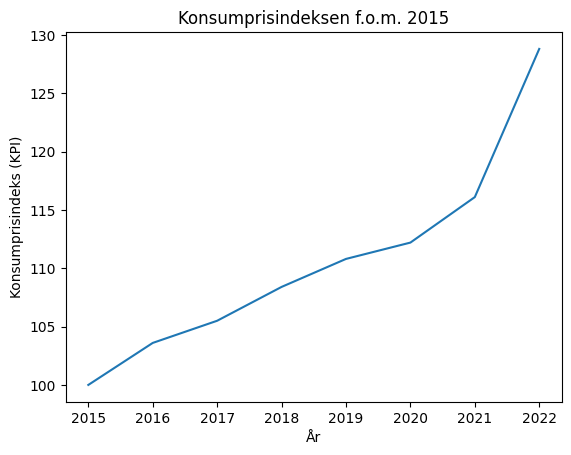
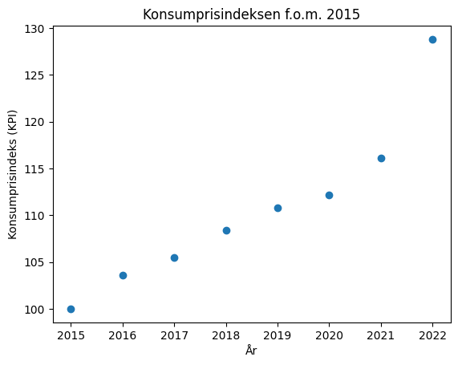
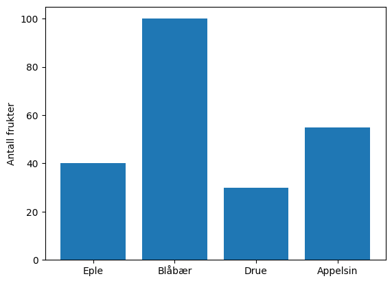
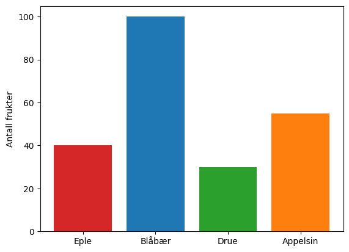
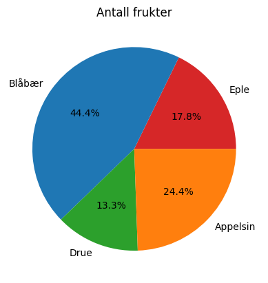

Plotting: Enkle Datasett#
Noen datasett har så få datapunkter at man kan skrive de inn i Python selv.
La oss se på et sett med data som handler om konsumprisindeks.
Konsumprisindeks |
År |
|---|---|
2015 |
100 |
2016 |
103,6 |
2017 |
105,5 |
2018 |
108,4 |
2019 |
110,8 |
2020 |
112,2 |
2021 |
116,1 |
2022 |
122,8 |
Vi kan skrive dette inn i Python som lister på denne måten:
x = [2015, 2016, 2017, 2018, 2019, 2020, 2021, 2022] # År etter 2015
y = [100, 103.6, 105.5, 108.4, 110.8, 112.2, 116.1, 128.8] # Konsumprisindeks
Kilde til data om konsumprisindeks: SSB
Linjediagram#
For å lage et linjediagram mellom punktene kan vi bruke plot()-funksjonen som ligger i matplotlib.
import matplotlib.pyplot as plt
x = [2015, 2016, 2017, 2018, 2019, 2020, 2021, 2022] # År etter 2015
y = [100, 103.6, 105.5, 108.4, 110.8, 112.2, 116.1, 128.8] # Konsumprisindeks
plt.plot(x, y)
plt.title("Konsumprisindeksen f.o.m. 2015")
plt.xlabel("År")
plt.ylabel("Konsumprisindeks (KPI)")
plt.show()

Punktdiagram#
Noen ganger ønsker vi å plotte datapunktene som punkter. Da bruker vi scatter()-funksjonen.
import matplotlib.pyplot as plt
x = [2015, 2016, 2017, 2018, 2019, 2020, 2021, 2022] # År etter 2015
y = [100, 103.6, 105.5, 108.4, 110.8, 112.2, 116.1, 128.8] # Konsumprisindeks
plt.scatter(x, y)
plt.title("Konsumprisindeksen f.o.m. 2015")
plt.xlabel("År")
plt.ylabel("Konsumprisindeks (KPI)")
plt.show()

Søylediagram#
Vi kan lage søylediagrammer med bar()-funksjonen fra matplotlib.
For å bruke et bar() trenger vi
en liste med navn på kategoriene våre (labels).
en liste med data i samme rekkefølge som navnene.
import matplotlib.pyplot as plt
frukter = ['Eple', 'Blåbær', 'Drue', 'Appelsin']
antall = [40, 100, 30, 55]
plt.bar(frukter, antall)
plt.ylabel("Antall frukter")
plt.show()

Vi kan også legge til en fargeliste for å skille på kategoriene.
import matplotlib.pyplot as plt
frukter = ['Eple', 'Blåbær', 'Drue', 'Appelsin']
antall = [40, 100, 30, 55]
fargeliste = ['tab:red', 'tab:blue', 'tab:green', 'tab:orange']
plt.bar(frukter, antall, color = fargeliste)
plt.ylabel("Antall frukter")
plt.show()

Fargetips
Fargene som er skrevet med tab: (tab:red, tab:blue osv…) er fra en fargepallett som er litt finere enn standardfargene. Prøv gjerne standardfargene selv (red, blue osv…) og nyt de knæsje badeballfargene som minner om en forferdelig dårlig powerpoint eller en statisk nettside fra 1998.
Du kan finne flere farger i dokumentasjonen List of named colors.
Sektordiagram#
Vi kan lage sektordiagrammer eller kakediagrammer med plt.pie().
import matplotlib.pyplot as plt
frukter = ["Eple", "Blåbær", "Drue", "Appelsin"]
antall = [40, 100, 30, 55]
fargeliste = ["tab:red", "tab:blue", "tab:green", "tab:orange"]
plt.pie(antall, labels=frukter, colors=fargeliste, autopct="%.1f%%")
plt.title("Antall frukter")
plt.show()

Vi ser at sektordiagrammet fungerer ganske likt som søylediagrammet. Parameteren autopct gjør sånn at de prosentvise inndelingene skrives inn i hver sektor.
Oppgaver#
Oppgave 1#
Finn høyden til medelevene dine.
Del høydene opp i blokker på 10cm og tell hvor mange som havner i hver blokk.
Det kan for eksempel se slik ut:
+-------+-------+-------+-------+-------+-------+
|141-150|151-160|161-170|171-180|181-190|191-200|
+-------+-------+-------+-------+-------+-------+
| 1 | 5 | 7 | 4 | 2 | 1 |
+-------+-------+-------+-------+-------+-------+
Lag et søylediagram av høydene. Du kan ta utgangspunkt i tabellen over hvis du ikke har klassekamerater 😶🌫️
Oppgave 2#
I denne oppgaven skal vi lage et sektordiagram over utdanningsnivå i den norske befolkningen.
Under er et sett med data over høyest oppnådd utdanningsnivå i befolkningen i 2022.
Utdanningsnivå |
Antall mennesker |
|---|---|
Grunnskole |
1 062 631 |
Videregående |
1 628 428 |
Fagskole |
141 501 |
Universitet og høyskole |
1 650 827 |
Uoppgitt eller ingen utdanning |
24 913 |
Lag et sektordiagram som viser fordelingen over. Husk tittel.
Kilde til data om utdanningsnivå: SSB
Oppgave 3#
I denne oppgaven skal vi sammenlikne lønnssutvikling 💸
Årstall |
Lønn: Undervisning |
Lønn: Alle næringer |
|---|---|---|
2015 |
501 300 |
516 000 |
2016 |
516 100 |
522 700 |
2017 |
523 500 |
535 400 |
2018 |
536 800 |
550 800 |
2019 |
552 900 |
569 900 |
2020 |
564 200 |
587 600 |
2021 |
577 400 |
609 600 |
2022 |
597 300 |
634 700 |
Tabellen over viser utviklingen i gjennomsnittslønnen for undervisningssektoren sammenliknet med gjennomsnittslønnen for alle næringer.
Lag et linjediagram over lønnsutviklingen i undervisningssektoren.
Lag et annet linjediagram over lønnsutviklingen i alle sektorer.
Sørg for at du har med label og plt.legend() sånn at man kan skille diagrammene.
Sammenlikn utviklingen og skriv en liten kommentar over hva du ser.
Kilde til data om gjennomsnittlig årslønn per sektor: SSB